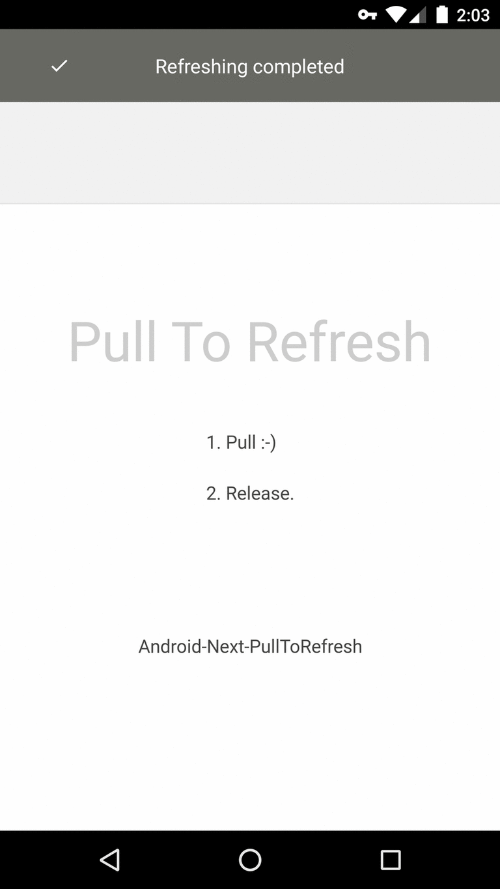

# Android-Next-PullToRefresh
The next version of Android PullToRefresh.
## Screens

## Features
* Supports both Pulling Down from the top, and Pulling Up from the bottom (or even both).
* Animated Scrolling for all devices.
* As it's a container, so its child view theoretically could be any view. Surely working with:
* **ListView**
* **ExpandableListView**
* **GridView**
* **WebView**
* **ScrollView**
* **HorizontalScrollView**
* **ViewPager**
* Maven Support.
* Indicators to show the user when a Pull-to-Refresh is available.
* Support for **ListFragment**.
* Lots of customisation options!
## Add dependency
**Gradle dependency:**
``` groovy
compile 'com.sanfriend:ptr:1.0.1'
```
or
**Maven dependency:**
``` xml
com.sanfriend
ptr
1.0.1
```
## Sample usage
**Layout**
``` xml
```
###### Note
Node id ptr_header, ptr_body, ptr_footer, ptr_header_decoration should be kept as is.
**Activity**
``` java
private PullToRefreshLayout mPtr;
...
@Override
protected void onCreate(Bundle savedInstanceState) {
mPtr = (PullToRefreshLayout)findViewById(R.id.ptrLayout);
...
// set listener
mPtr.setOnRefreshListener(new OnRefreshListener() {
@Override
public void onRefresh() {
// mWebView.reload();
}
});
// tell when to end refreshing
mWebView.setWebViewClient(new WebViewClient() {
@Override
public void onPageFinished(WebView view, String url) {
super.onPageFinished(view, url);
if (mPtr != null && mPtr.isRefreshing()) mPtr.setRefreshing(false);
}
});
...
}
```
## Why this
1. Tried [Andriod-PullToRefresh](https://github.com/chrisbanes/Android-PullToRefresh), but it is discontinued and its WebView performs really bad.
2. Tried [SwipeToLoadLayout](https://github.com/Aspsine/SwipeToLoadLayout), no header decoration images.
3. Tried [android-Ultra-Pull-To-Refresh](https://github.com/liaohuqiu/android-Ultra-Pull-To-Refresh), not ideal.
4. Tried ...
## Acknowledgments
1. [SwipeToLoadLayout](https://github.com/Aspsine/SwipeToLoadLayout)
2. [EthanWang](https://github.com/ethanwang)
### License
Licensed under the [Apache License, Version 2.0](http://www.apache.org/licenses/LICENSE-2.0.html)
Copyright (c) 2016 [fotock](https://sanfriend.com/)